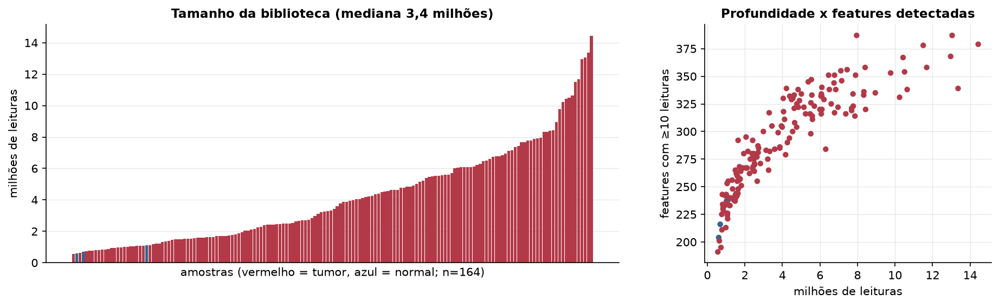
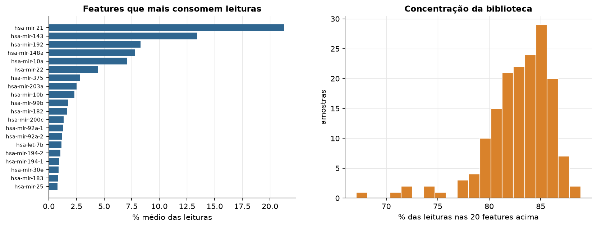
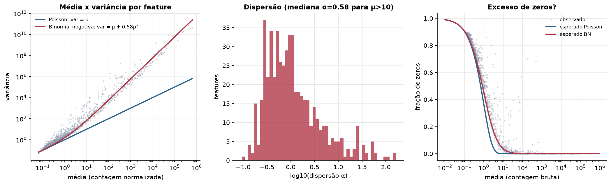
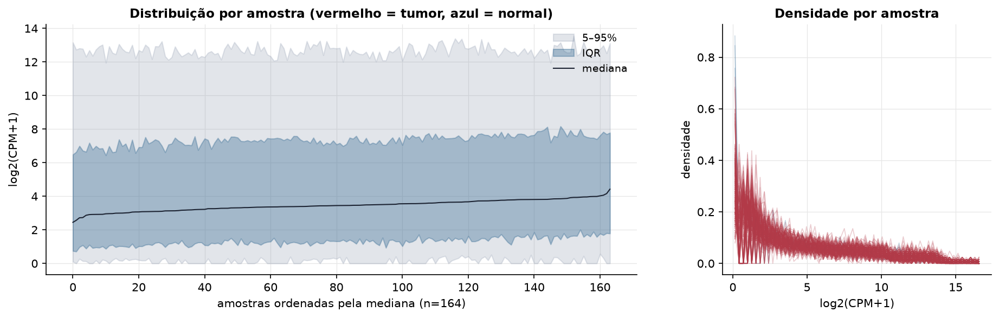
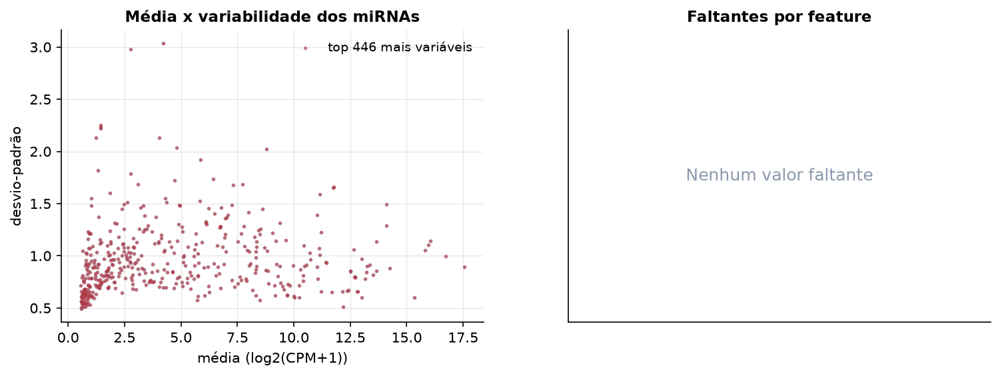
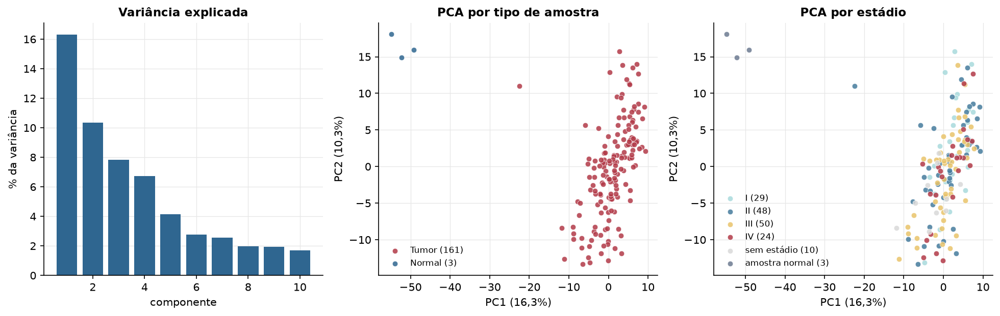
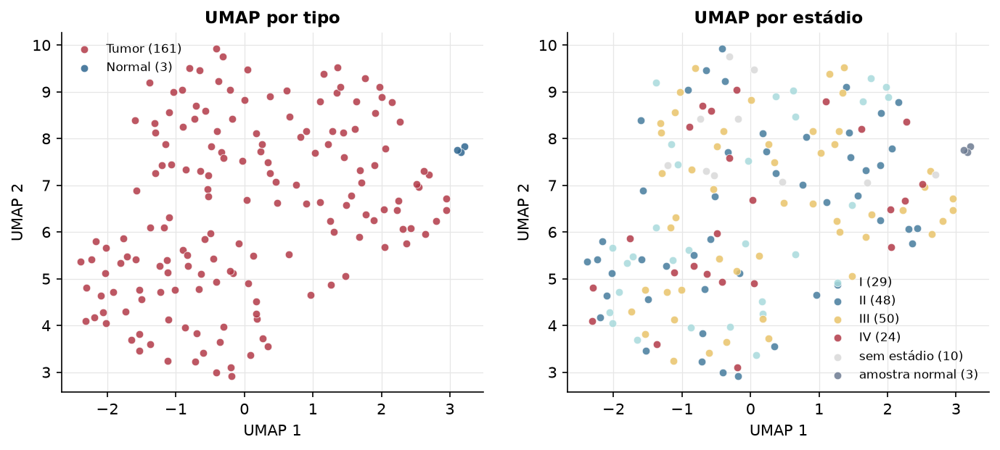
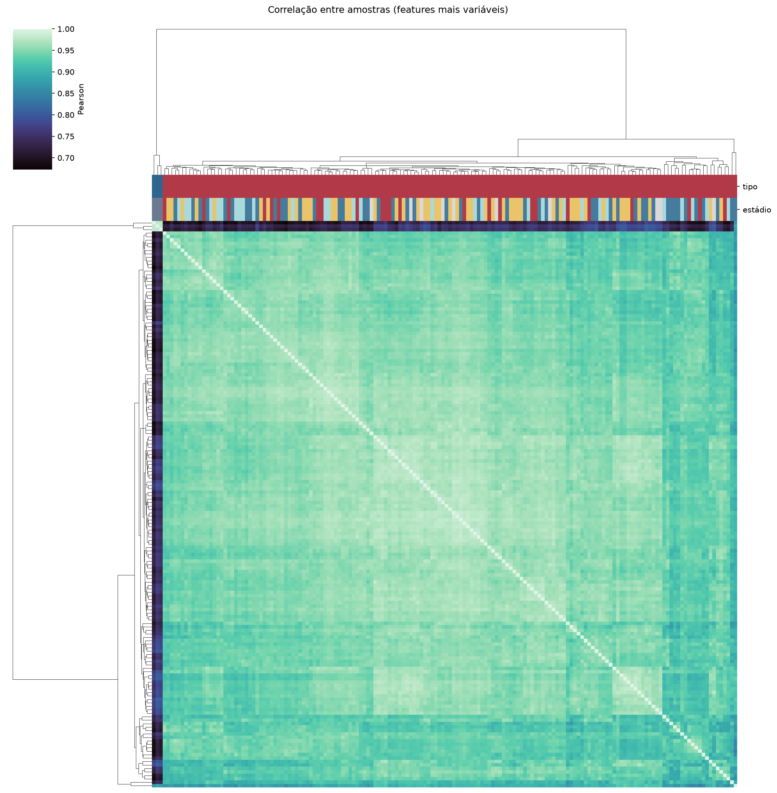
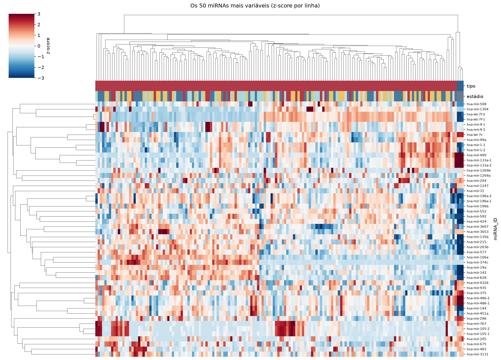
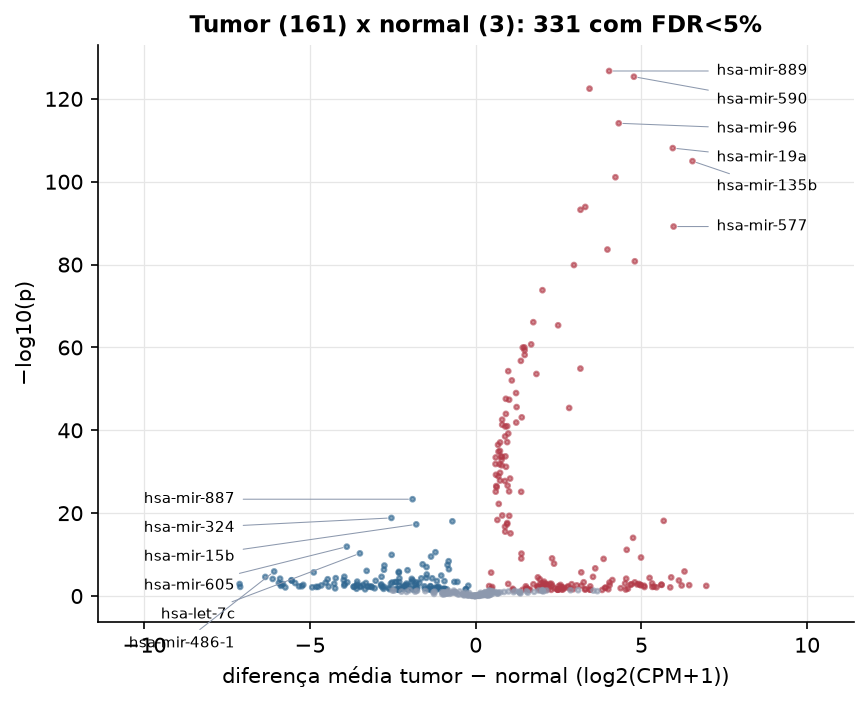

READ · miRNA-seq: contagens brutas (GDC)
BCGSC miRNA Profiling (miRBase v21) · gerado em 22/10/2026 03:31
3,4 Mtamanho mediano
0,58dispersão mediana α
446miRNAs
161amostras tumorais
3amostras normais
0,0%valores faltantes
Fonte: API do GDC (BCGSC miRNA Profiling)
Principais resultados
- Bibliotecas de 0,6 a 14,4 milhões de leituras (mediana 3,4). 957 de 1.881 features têm leitura em pelo menos 10% das amostras.
- A variância cresce bem acima da média: a dispersão mediana da binomial negativa é α=0.58 (para features com média > 10). Isso descarta um modelo Poisson e indica binomial negativa (ou Poisson-lognormal) na verossimilhança.
- A fração de zeros é compatível com a binomial negativa (diferença mediana -0,2%); inflação de zeros não parece necessária.
- Em média 83,4% das leituras de cada amostra vão para as 20 features mais abundantes.
- 446 miRNAs medidos em 164 amostras (161 tumorais e 3 normais); 0,0% dos valores estão faltando.
- Os dois primeiros componentes principais explicam 16,3% e 10,3% da variância das features mais variáveis.
- Correlação mediana entre amostras: 0,95.
- Amostras com correlação muito abaixo das demais (possíveis outliers técnicos): TCGA-AF-2692-11, TCGA-AF-2689-11, TCGA-AF-2691-11, TCGA-DT-5265-01.
- Tumor x normal: 331 miRNAs diferentes com FDR < 5% (185 maiores no tumor, 146 maiores no normal; 3 pacientes têm o par tumor-normal).
- Mais aumentados no tumor: hsa-mir-889, hsa-mir-590, hsa-mir-454, hsa-mir-96, hsa-mir-19a, hsa-mir-135b, hsa-mir-3613, hsa-mir-450b.
- Mais reduzidos no tumor: hsa-mir-887, hsa-mir-324, hsa-mir-500a, hsa-mir-15b, hsa-mir-605, hsa-mir-3653, hsa-let-7c, hsa-mir-7706.
- Associações clínicas com p < 0,05 nos componentes principais: PC2 com idade (p=0.0062).
Biblioteca


Sobredispersão e zeros

Exploração em log2(CPM+1)
Features com CPM ≥ 1 em pelo menos 20% das amostras (446 features).
Distribuição dos valores


Estrutura das amostras




Tumor x normal

Features mais diferentes entre tumor e normal
| miRNA_ID | diferenca_tumor_menos_normal | t | p | fdr |
|---|---|---|---|---|
| hsa-mir-889 | 4.026 | 75.985 | 1.85e-127 | 8.27e-125 |
| hsa-mir-590 | 4.773 | 74.448 | 4.47e-126 | 9.96e-124 |
| hsa-mir-454 | 3.435 | 71.334 | 3.41e-123 | 5.06e-121 |
| hsa-mir-96 | 4.315 | 62.984 | 7.7e-115 | 8.59e-113 |
| hsa-mir-19a | 5.946 | 57.56 | 7.6e-109 | 6.77e-107 |
| hsa-mir-135b | 6.541 | 54.887 | 1.06e-105 | 7.9e-104 |
| hsa-mir-3613 | 4.216 | 51.738 | 8.22e-102 | 5.24e-100 |
| hsa-mir-450b | 3.306 | 46.347 | 1.22e-94 | 6.78e-93 |
| hsa-mir-411 | 3.162 | 45.859 | 5.88e-94 | 2.91e-92 |
| hsa-mir-577 | 5.971 | 43.063 | 6.53e-90 | 2.91e-88 |
| hsa-mir-628 | 3.975 | 39.461 | 2.32e-84 | 9.4e-83 |
| hsa-mir-592 | 4.801 | 37.716 | 1.6e-81 | 5.95e-80 |
| hsa-mir-188 | 2.964 | 37.172 | 1.29e-80 | 4.44e-79 |
| hsa-mir-651 | 2.014 | 33.687 | 1.51e-74 | 4.82e-73 |
| hsa-mir-627 | 1.737 | 29.614 | 7.99e-67 | 2.37e-65 |
| hsa-mir-653 | 2.486 | 29.237 | 4.51e-66 | 1.26e-64 |
| hsa-mir-4668 | 1.674 | 27.001 | 1.81e-61 | 4.75e-60 |
| hsa-mir-655 | 1.468 | 26.654 | 9.85e-61 | 2.44e-59 |
| hsa-mir-376a-1 | 1.42 | 26.634 | 1.08e-60 | 2.55e-59 |
| hsa-mir-1277 | 1.476 | 26.341 | 4.6e-60 | 1.03e-58 |
| hsa-mir-376b | 1.477 | 25.81 | 6.45e-59 | 1.37e-57 |
| hsa-mir-5000 | 1.362 | 25.156 | 1.75e-57 | 3.54e-56 |
| hsa-mir-508 | 3.159 | 24.323 | 1.26e-55 | 2.45e-54 |
| hsa-mir-3913-1 | 0.981 | 24.048 | 5.26e-55 | 9.78e-54 |
| hsa-mir-301b | 1.831 | 23.749 | 2.53e-54 | 4.5e-53 |
| hsa-mir-5586 | 1.089 | 23.074 | 9.02e-53 | 1.55e-51 |
| hsa-mir-1245a | 1.217 | 21.779 | 1.02e-49 | 1.68e-48 |
| hsa-mir-3913-2 | 0.909 | 21.2 | 2.51e-48 | 4e-47 |
| hsa-mir-7705 | 1.009 | 21.107 | 4.23e-48 | 6.5e-47 |
| hsa-mir-556 | 1.233 | 20.386 | 2.46e-46 | 3.65e-45 |
Associação com variáveis clínicas
p-valores da associação dos três primeiros componentes principais (só tumores) com estádio (Kruskal-Wallis), sexo (Mann-Whitney), idade (Spearman) e sobrevida global (Cox univariado).
| estádio (Kruskal) | sexo (Mann-Whitney) | idade (Spearman) | sobrevida OS (Cox) | |
|---|---|---|---|---|
| PC1 (13,0%) | 0.115 | 0.563 | 0.39 | 0.926 |
| PC2 (9,3%) | 0.492 | 0.059 | 0.006 | 0.346 |
| PC3 (8,2%) | 0.986 | 0.292 | 0.094 | 0.925 |